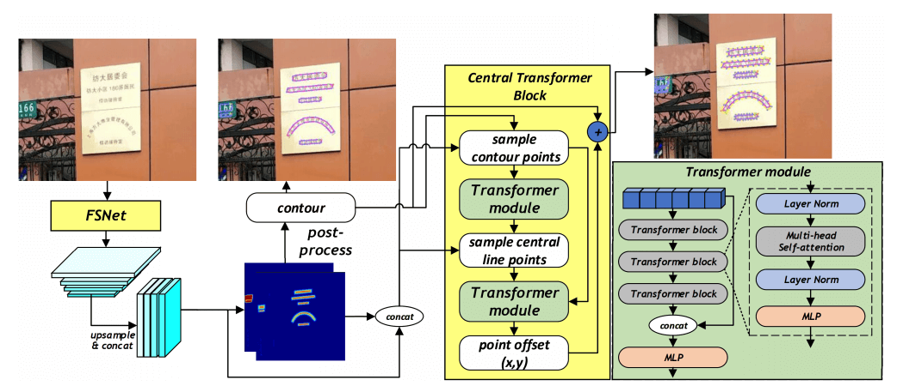
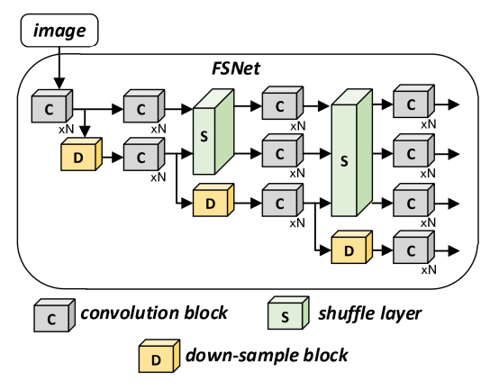
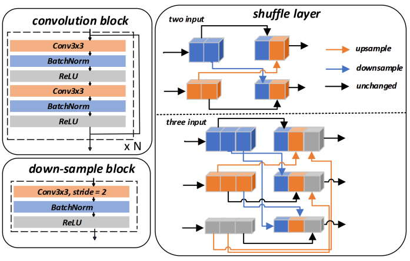
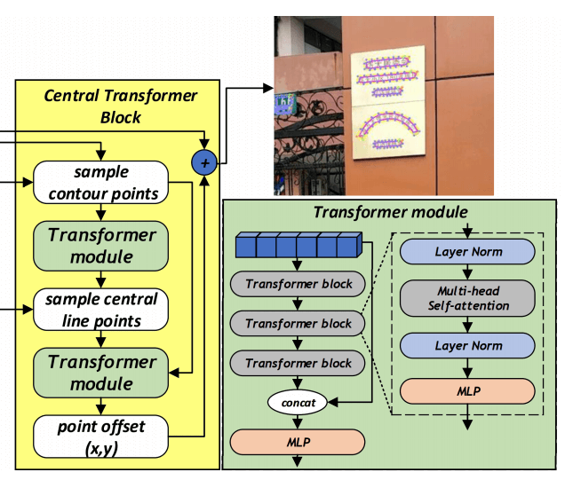
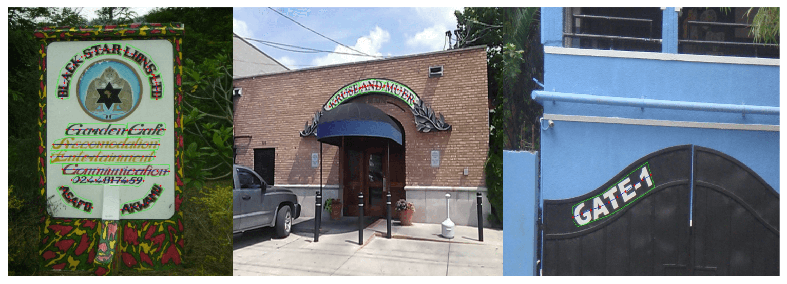
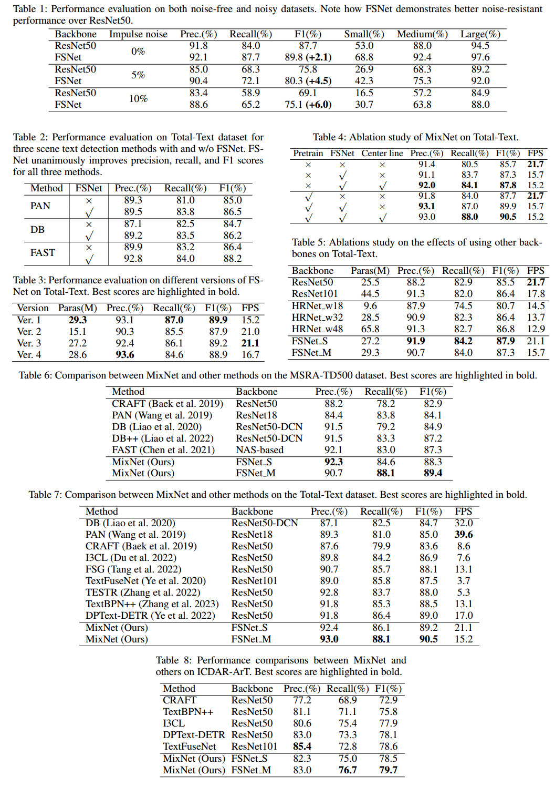
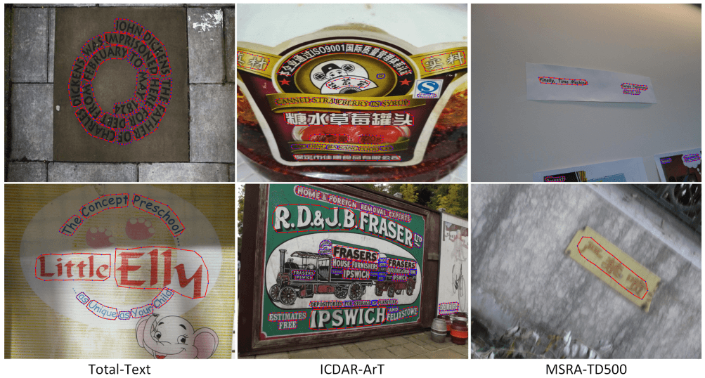

Paper-MixNet-Toward Accurate Detection of Challenging Scene Text in the Wild
资源
- ParperWithCode: MixNet: Toward Accurate Detection of Challenging Scene Text in the Wild | Papers With Code
- GitHub: D641593/MixNet (github.com)
正文
Abstract
MixNet，这是一种混合架构，结合了 CNN 和 Transformers 的优势，能够从具有挑战性的自然场景中准确检测小文本，无论方向、风格和照明条件如何。
MixNet 包含两个关键模块：
（1）作为主干的特征混叠网络（FSNet）
（2）利用场景文本的 1D 流形约束的中央变换块（CTBlock）。
我们首先在 FSNet 中引入了一种新的特征洗牌策略，以促进跨多个尺度的特征交换，生成优于流行的 ResNet 和 HRNet 的高分辨率特征。FSNet 主干已经实现了对许多现有文本检测方法的显著改进，包括 PAN、DB 和 FAST。
然后，我们设计了一个互补的 CTBlock，以利用类似于文本区域中轴的基于中心线的特征，并表明当小场景文本出现得很近时，它可以在具有挑战性的情况下优于基于轮廓的方法。大量的实验结果表明，将 FSNet 与 CTBlock 混合的 MixNet 在多场景文本检测数据集上取得了最先进的结果。
Introduction
在场景文本检测领域，自然场景，文本框可以以任意方向和非矩形出现。
基于分割的方法被广泛用于处理任意形状的文本。与依赖边界框的对象检测方法不同，基于分割的方法预测像素级掩码来识别每个区域中的文本。
- 往往依赖于卷积神经网络（CNNs），后者往往忽略整个文本边界布局的全局几何分布，导致以下两个问题。首先，CNN 关注局部空间特征，因此对文本区域中的噪声很敏感。
- 常用的CNN骨干网，如 ResNet 和 VGG，提供了粗略的高分辨率特征，这些特征有助于大文本检测，但不利于小文本实例的检测。
Transformer 在多个领域取得了显著成功，并提供了一种提取特征的替代方法。与 CNN 关注相邻区域的局部特征不同，Transformer 强调文本区域之间的全局空间关系。
随着对 Transformer 的广泛研究，最近开发了几种基于轮廓的方法，可以直接检测文本轮廓并实现最先进的性能。
- TESTR 使用 Transformer 编码器提取更大范围的文本特征，并将感兴趣区域（ROI）发送到解码器，以基于框到多边形流生成文本框。
- DPText DETR 在文本 ROI 中执行点采样以获得更好的位置信息。这些基于轮廓的方法可以直接从输入图像中生成文本轮廓，从而消除了在基于分割的方法中对后处理的需要。

（1）用于生成高分辨率特征的特征提取网络（FSNet）
（2）用于检测文本区域的中轴（本文中称为“中心线”）的中央变换块（CTBlock）。
MixNet（FSNet+CTBlock）在检测自然场景中的小文本和弯曲文本方面尤其有效，例如斑块上的精细印刷。
- 提出了一种名为 MixNet 的混合架构，以结合 CNNs 和 Transformers 的优势。
- 提出了一种新的特征混叠网络（FSNet），用于在特征提取过程中在低分辨率和高分辨率层之间交换特征，加深了高分辨率特征的提取层。
- 在提取特征后，我们提出了一种新的中央变换块（CTBlock），以进一步增强文本区域的全局几何分布。具体地，对图像特征生成的热图进行后处理，以获得文本的粗略轮廓。
- 这些采样特征被用作 Transformer 模块的输入，以学习文本的几何分布边界并生成文本轮廓的中心线。
所提出的 MixNet（FSNet+CTBlock）为具有代表性的任意形状场景文本检测基准设置了新的最先进技术。报道了场景文本检测的三个流行数据集的改进。MixNet 在检测自然场景中的小弯曲文本方面特别有效。
Related works
Segmentation-based Scene Text Detection
基于分割的场景文本检测模型生成热图，该热图指示每个图像像素是文本实例的可能性。然后对热图进行处理以生成多个文本轮廓。这种方法面临着一个重大挑战：如果预测的热图连接了多个文本实例，则后处理算法无法正确分离它们。
- DB
- PAN
- FAST
Contour-based Scene Text Detection
基于轮廓的场景文本检测方法利用数学曲线来拟合任意形状的文本。该模型预测适合文本的曲线的参数。随着文本形状变得更加复杂，模型需要更多的参数，拟合也更容易失败。
- ABCNet
- TextBPN
- FCENet
- FSG
- DPTExt DETR
The Proposed Method
Overview of MixNet
MixNet 的整体架构
- FSNet 作为骨干网络来提取文本特征，并生成像素级分类、距离场、方向场和嵌入值。然后，该信息被用于生成粗略的文本轮廓。
- 从粗略文本轮廓采样的 P 点被作为 CTBlock 的输入。具体地，将 P 个采样点及其对应的图像特征作为序列输入到 CTBlock 中。
- 然后，第一个 Transformer 模块预测采样点的 x 和 y 偏移，并使用它们生成文本轮廓的中心线。
- 以同样的方式，对中心线进行采样，并将其与粗略轮廓的特征序列相结合，然后将其发送到第二个 Transformer 模块，以校正粗略的文本轮廓并生成更精细的文本轮廓。
Feature Shuffle Network (FSNet)
FSNet 设计用于在特征提取过程中交换低分辨率和高分辨率特征，使提取的高分辨率特征不易受到噪声的影响。
当 HRNet 通过添加层来混合层之间的特征时，FSNet 平均划分每个分辨率的通道，并对划分的特征进行混洗。在混洗之后，每个分辨率的剪切特征被上采样和下采样到相同的大小，并连接到新的特征中。


请注意，FSNet 包含两个混洗层。第一混洗层具有两个分辨率特征输入（右上），第二混洗层有三个分辨率特征输出（右下）。
FSNet 包含三个主要模块，即卷积块、下采样块和混洗层。
卷积块被大量堆叠以提取特征。
下采样块使用步长为 $2$ 的 $3\times 3$ 卷积进行下采样。注意，每个卷积块的堆叠量是不同的。
FSNet 包含两个混洗层。
- 第一混洗层具有两个分辨率特征输入。
- 第二混洗层有三个分辨率特征输出。
混洗层将每个分辨率的特征的通道划分为输入数量 $F^i_1,…,F^i_n,…F^i_N$，其中 $F^i_n$ 表示第 $i$ 个标度的第 $N$ 个输入。裁剪后的特征根据索引被上采样或下采样到相应的大小，然后被连接以形成新的特征。
在 FSNet 的最后一层，所有 4 个尺度的结果被连接到单个特征图中。
Central Transformer Block (CTBlock)

将中心线与相应的特征集成在一起，以表示每个文本区域。CTBlock 中 的 Transformer 模块采用编码器-解码器结构。
- 编码器包括一个三层 Transformer 块。每个转换器块包含一个多头自注意块和一个多层感知器（MLP）网络。
- 解码器由一个简单的 MLP 组成。
在实践中，基于骨干网络生成的热图来提取每个文本实例的粗略轮廓。然后，我们沿着每个轮廓选择 $N$ 个点来表示文本轮廓。每个轮廓的长度，表示为 $C_i$，是 $L_i$ ，其中 $i$ 是每个文本实例的索引。我们将 $L_i$ 划分为长度为 $T$ 的 $N$ 个相等部分。每次T经过一个点并从起点经过。在重复这个过程 $N$ 次之后，我们沿着文本轮廓获得 $N$ 个点。我们根据经验观察到，当 $N\ge 20$ 时，性能略有改善。

Experiments
Datasets
- 弯曲文本：TotalText、ICDARArT
多向文本：MSRA-TD500
预训练模型：SynthText
Implementation Details
使用 FSNet 作为主干，并在 SynthText 上对其进行了 5 个 epochs 的预训练。在预训练过程中，我们使用了Adam优化器，并将学习率固定在0.001。
在微调阶段，我们在 Total Text、ArT 和其他数据集上训练了 600 个 epochs 的模型，初始学习率为 0.001，每 50 个 epochs 后下降到0.9。
输入图像大小设置为640×640，我们使用了数据增强技术，如随机旋转（-30°～30°）、随机裁剪、随机翻转和颜色抖动。
该代码是使用 Python 3 和 PyTorch 1.10.2 框架实现的。训练是在具有 24G 内存的 RTX-3090 GPU 上进行的。
Accuracy Improvement of FSNet
Ablation Study
Comparison with Other Backbone
Multi-oriented Scene Text Detection Result
Arbitrary-shaped Scene Text Detection Results
FSNet 极大地提高了在无噪声数据集中检测中小文本的成功率。

无论将当前模型的 Backbone 换成 REsNet50，还是将其他模型的 Backbone 换成 FSNet，都得出结论 FSNet 最有效，自己的模型最有效。

Conclusion
好棒棒。